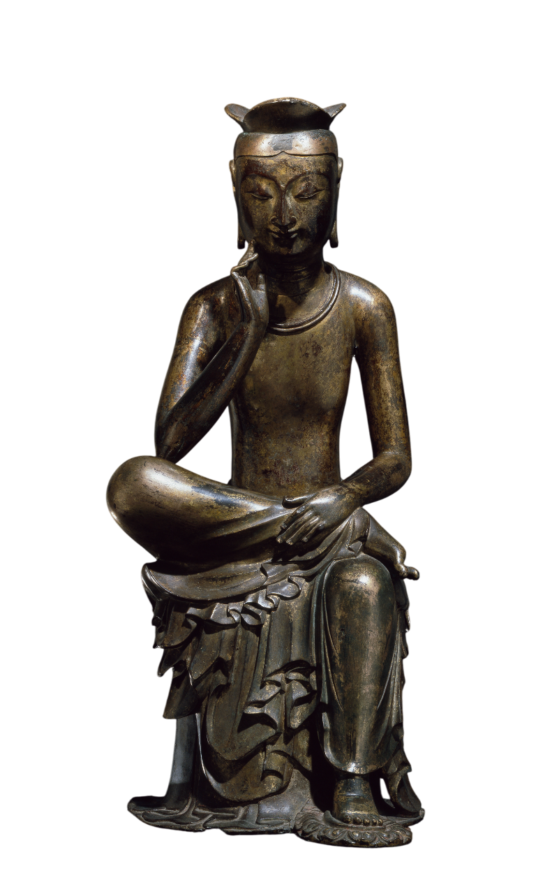

백제금동대향로

금동미륵보살반가사유상
금동미륵보살반가사유상은 삼국시대(6~7세기)에 유행했던 미륵 신앙과 관련된 불상으로,
미륵보살이 현세의 중생을 구제하기 위해 고뇌하는 모습을 표현한 것입니다.
반가사유상이란 반가부좌 자세로 앉아 오른손으로 뺨을 살짝 괸 채
생각에 잠긴 듯한 모습을 하고 있는 불상을 말합니다.
특히 국보 제83호로 지정된 국립중앙박물관 소장 금동미륵보살반가사유상은
뛰어난 조각 기술과 자비로운 미소로 유명하며,
국내에서 가장 큰 금동반가사유상 중 하나입니다.

호작도